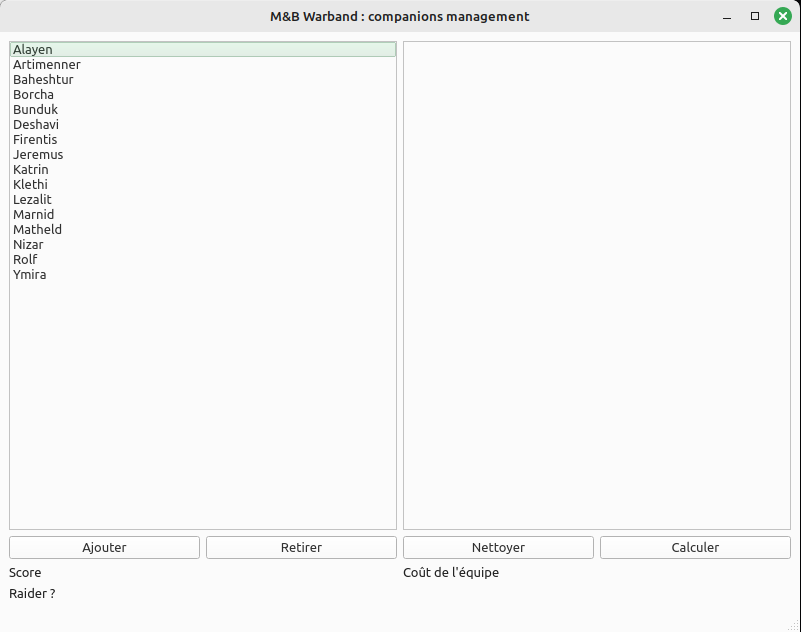
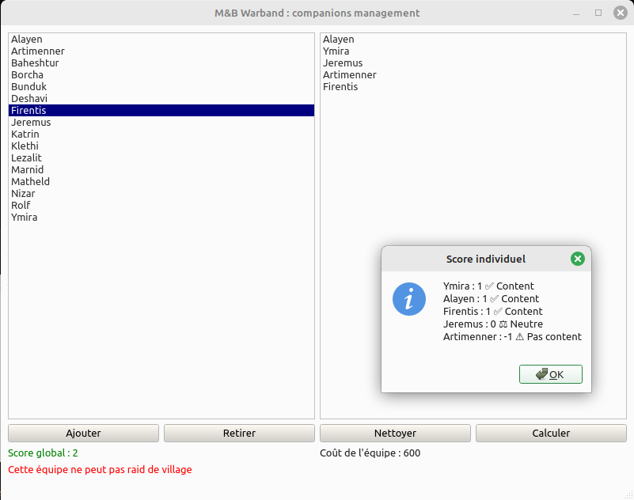
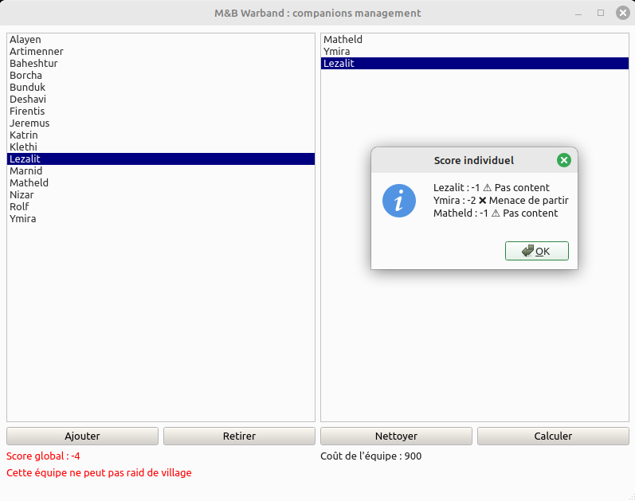

Projet perso Mount and Blade
Dans le jeu vidéo "Mount and Blade: Warband", les compagnons sont des personnages non-joueurs qui peuvent rejoindre votre équipe et vous aider dans vos aventures. Cependant, il peut être difficile de suivre leurs affinités car chaque compagnon aime une personne et en déteste deux autres. Cette application vise à résoudre les problèmes liés a la composition d'équipe en offrant une interface pour gérer rapidement et efficacement vos équipes de compagnons.
J'avais réalisé ce projet quand j'étais en première année de BUT informatique, c'était une façon pour moi de m'améliorer en programmation en créant un outil concret autour d'un thème que j'apprécie.
Screenshots


